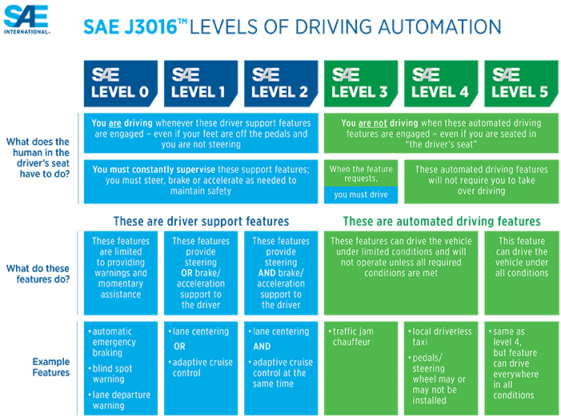
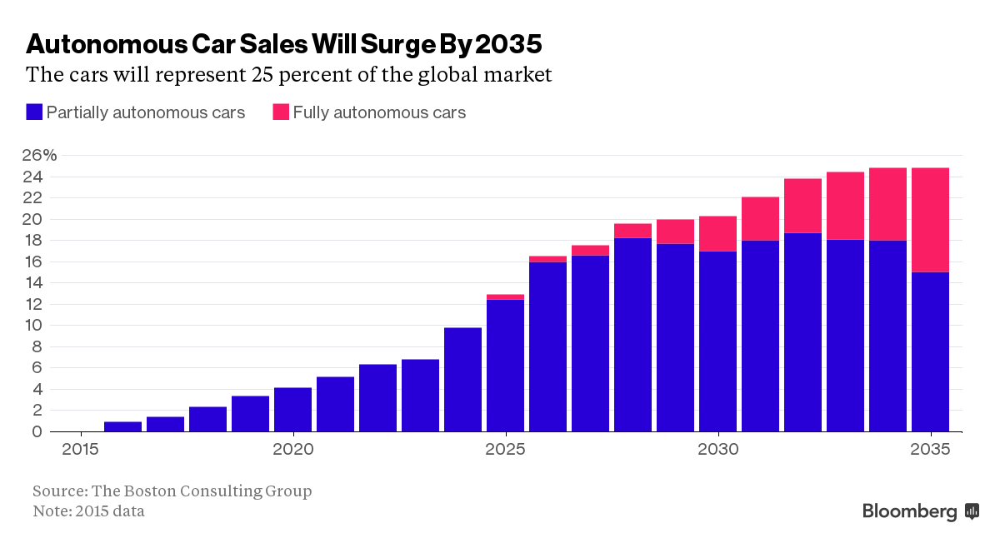
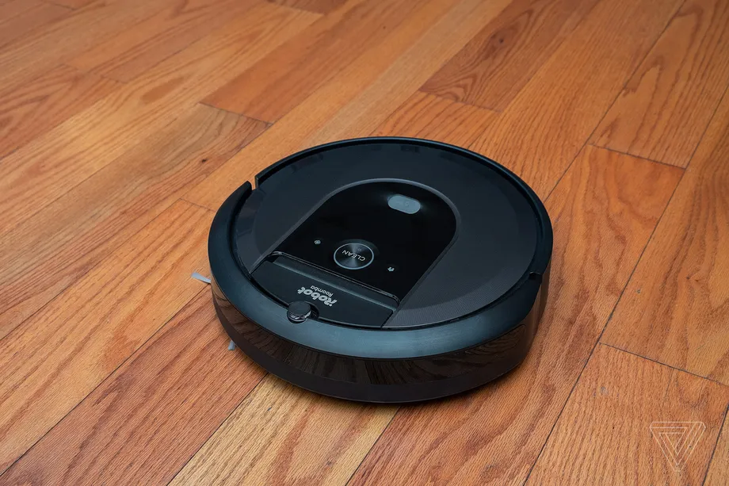
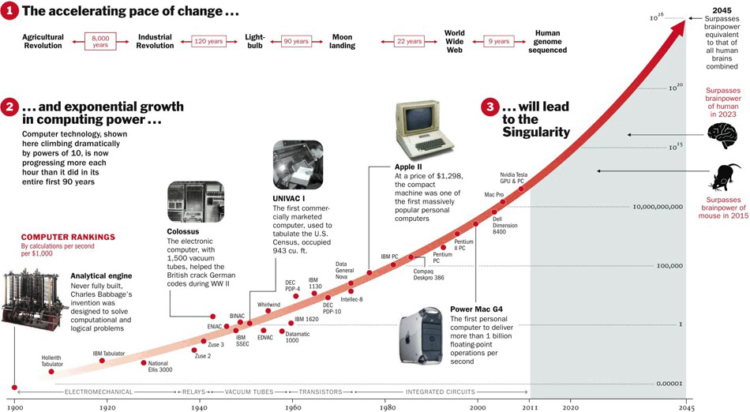
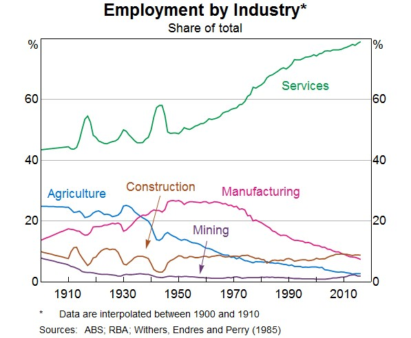
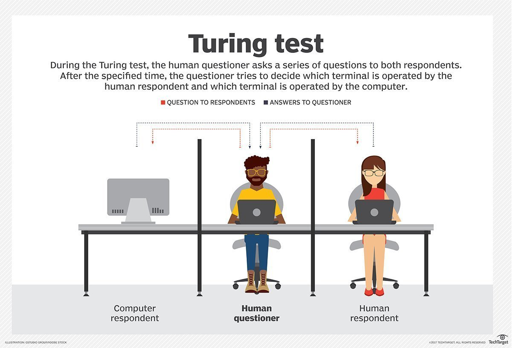
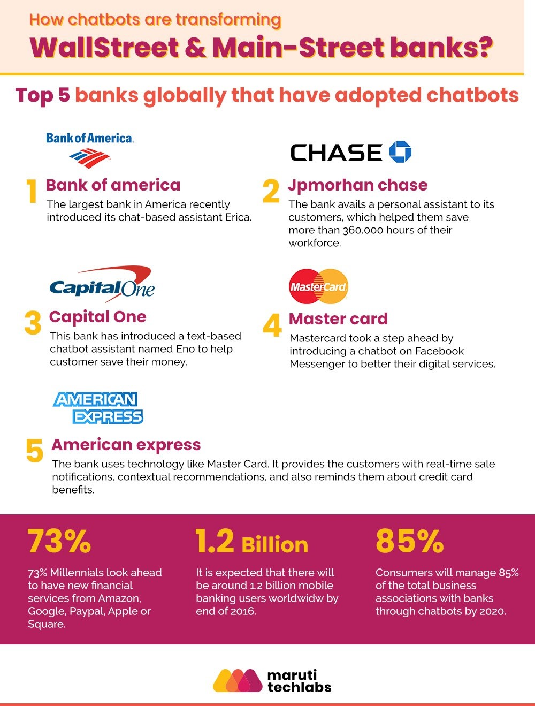

Autonomous Vehicles
Autonomous vehicles, also known as self-driving cars, are vehicles that use sensors, radars, cameras, and artificial intelligence to travel between destinations without the assistance of human drivers. The purpose of AVs is to make driving safer by eliminating driver error, and to provide mobility to those who cannot physically drive, such as children, the disabled, or the frail elderly. The benefits of AVs include; greatly improved safety, improved transport interconnectivity, reduced congestion, reduced pollution and emissions, greater convenience, efficiency and reliability, and reduced costs and maintenance requirements.
It is important to note that according to the SAE (Society of Automotive Engineers) there are 5 levels of autonomy for vehicles (see figure 1.1). The first level is ‘Driver Assistance’, where both the driver and the automated system share control over the vehicle, meaning the driver must keep their hands on the wheel. The second level is ‘Partial Automation’, where the automated system takes over; acceleration, braking and steering. However, the driver must still be ready to intervene with the automation in the case of malfunction or failure. The third level of automation is ‘Conditional Automation’, where the automated system takes over all tasks, but the driver must still have some attention towards road events. The fourth level is ‘High Automation’, which is the same as level three, however, there is no driver attention required for safety, the driver may ignore all driving responsibilities (driver may go to sleep). The last, fifth level of automation is ‘Full Automation’, which is when the vehicle doesn’t need a steering wheel, and no driver attention or intervention is required ever regardless of the condition. As of 2021, the highest level reached by a mainstream autonomous vehicle available to the public is level 3. However, company Waymo (funded by Google) has working level 4 autonomous taxis functioning presently on a low scale (see figure 1.3).

Figure 1.1 - Source: SAE International
The company which currently leads the way for autonomous state-of-art technology is Tesla, which has been working on full self-driving technology since early 2014. They use ‘coarse-grained two-dimensional maps and cameras (no lidar) as well as radar and ultrasonic sensors’’ as an approach to achieve full autonomy for their future vehicles. Tesla has been the main factor that has sped up the development and production of autonomous vehicles, as well as the leader in autonomous technology. Tesla currently is at the forefront of AVs, ranked at level 2 autonomy meaning the driver is able to take their hands off the steering wheel, therefore the vehicle taking control of acceleration, braking and steering. However, by the present law, drivers aren’t allowed to take their hands off the wheel or eyes off the road regardless of the situation. It is predicted by Chris Urmson, CEO of Aurora, a leading autonomous vehicle development firm that; in the next couple of years semi-autonomous vehicles will become mainstream and that “by 2025 the first fully autonomous vehicles will operate on the road” (see figure 1.2).

Figure 1.2 - Source: Boston Consulting Group
There are four main factors that contribute to the development of self-driving cars; these factors are; road and traffic managing infrastructure, radar and sensor technology, policy and regulation, and lastly consumer acceptance. In order for AVs to operate safely on public roads, infrastructure like; signs, road markings, and traffic lights must be able to communicate clearly with the car. Radar and sensor technology is also a crucial element for AVs as these technologies are what enable them to function and operate within other non-AVs on the road. Currently, self-driving vehicles are in the ‘grey area’ of most countries’ vehicle regulations, have many moral and ethical implications, and also is a developing area of law and policy that needs to be rewritten to allow the use of fully autonomous vehicles. Lastly, consumer acceptance is one of the most important developments that need to be made, this is because if people aren’t willing to accept the worldwide change to AVs, there will never be a truly effective and beneficial transition.
Autonomous technology in road vehicles would impact factors such as; the automotive industry, vehicle insurance, urban planning, labor market, traffic, etc. The development of AVs over the past few years has created uncertainty in the automotive market, as well as demand for more advanced autonomous systems. Many manufacturers have to make the decision to either stay with their present business model or adapt to the new technological innovations pushed by other manufacturers. It is likely that most vehicle manufacturers will promote the change to more advanced autonomous systems and that there will be a wave of change across the industry as a whole. People affected by the development of autonomous vehicles such as; taxi and delivery drivers will be made redundant and be forced to find a job in a different industry. Taxi and delivery services will also be forced to adapt, by integrating autonomous systems into their vehicles (i.e Waymo) creating a new market for autonomous services (see figure 1.3).
Figure 1.3 - Source: Waymo
Another significant impact of autonomous technology is the rise of electric vehicles. Since autonomous vehicles are made possible through the use of electronic communication systems, radars, and sensors, it clearly relies on electricity to operate, therefore requiring lithium-ion batteries to power the vehicle. This proposes the transition from fossil fuels to electricity-powered vehicles, creating another area in need of development in technology, as well as impacting the oil industry (the world’s biggest industry). This would likely have a similar impact as autonomous technology as they are connected by the same cause of change. The people most affected by the development of electric vehicles would include; gas station companies and mechanics, as people are no longer using fossil fuels as a source of energy/fuel. The change to battery-powered vehicles would make regular car engines replaced by lithium-ion batteries and will create a market for car battery technology. Gas stations will be replaced by charging stations, and mechanics will be replaced by mechanical electricians.
The integration of autonomous vehicles into mainstream society will affect me by giving me the ability to get driven by the car’s software, instead of having to control it to my destination. This advancement will allow me to relax, be productive or watch a tv show while being transported by the vehicle to where I have to be, guaranteeing I’ll get there safely and on time. In my daily life, self-driving cars will affect the way I get from ‘destination A to destination B’. Instead of being driven by a taxi driver or parent, I’ll be transported around through the use of autonomous technology. AVs will affect my life by allowing me to get driven to the city university campus by a self-driving car, rather than having the hassle of catching a scheduled metro train. The introduction of fully autonomous vehicles would affect my family by giving them the ability to get to where they need to be, without spending the time having to actively drive there and instead, spending the time more productively, more comfortably.
Robotics
Robotics is the result of combining science, engineering and technology in order to produce machines, called robots. These robots are often made to replicate actions that humans perform, for instance, packing products in a factory or squirting the ice cream into your favourite tubs of ice cream. While robots were mostly thought of as mere fiction in movies, such as R2D2 from the Star Wars franchise, we have now developed a variety of robots who can copy the actions of human labour, or even perform them better. Currently, one of the most advanced forms of robots is ASIMO, a bipedal humanoid robot made by Honda. Honda’s goal with ASIMO was to create robots that will coexist with and be useful to people, and is fitted with the world’s first autonomous behaviour control technology. This means that ASIMO can perform tasks such as run, dance, hop, kick a soccer ball; it can even run and walk on uneven slopes, and climb stairs, all on its own. Although ASIMO was discontinued by Honda, claiming that research involving ASIMO will be used for more practical use cases like nursing, ASIMO will continue to be one of the most advanced pieces of robotics created.
Figure 1.1 - Honda’s ASIMO robot. Source - Phys
The things robotics makes possible are infinite. Currently robotics are utilised in a large variety of practical fields, such as factories, military, medical; even daily practical use, like vacuum robots. Robots can serve as precise aid in action which is impossible to achieve as a human being, such as surgery robots, or can perform actions completely in place of humans to allow a more efficient use of time, such as cleaning robots at home or even robots in a factory, which play the part of entire teams, allowing companies to completely replace workers.
Although the field of robotics is advancing at an alarming rate, there is unlikely to be any major advancements in the next 3 years. This is because the field of robotics tends to make major advancements over certain time periods. It takes a large amount of time and research to make major advancements in the field of robotics, and while continuous, the progress is usually slow, bit by bit. However, this does not mean that the field of robotics won’t make major advancements in the next 20 or 30 years. As many have feared, robots will most likely replace human labour in many fields of work. So far, robots are utilised mainly in manufacturing fields, which is low skill labor; this would be things like painting in a car factory, or wrapping a finished product in a food factory. However, as robots become more and more autonomous; which has already been seen on robots such as ASIMO and Spot, made by Boston Dynamics, robots will be solely utilised for a much larger amount of tasks. These could be things like construction work, or even farfetched tasks like walking the dog.
Figure 1.2 - Construction robots. Source - Futurism
We have already seen the effect of modern robots on job loss and the job market; according to ABC, 1.7 million manufacturing jobs have been lost to robots globally since 2000. Studies from Oxford Economics have found that up to 20 million manufacturing jobs could be lost to robots by 2030, which is only in the next 10 years. This will mainly affect those working low to medium skilled tasks in manufacturing fields, but will also affect those in all types of fields, such as finance which could be considered to be quite a high skilled occupation. However, advancement in the field of robotics does not just mean improvements in manufacturing. As robots advance, a larger variety of robots will be introduced, for things like manufacturing, as well as robots for daily practical use. These have already been introduced, like the widely loved Roomba robot vacuum.

Figure 1.3 - Roomba robot vacuum. Source - TheVerge
While new robots could demand human labour to control them, which could create jobs, robotic advancement will definitely replace many more jobs, or make them redundant. This is because as the field of robotics advances, robots will become more and more autonomous or independent.
In my daily life, this will affect me in two different ways. First off is in the way I operate in my daily life and how my daily practises would change. While robots can be quite expensive, especially new and state of the art robots, I would definitely utilise many types of cleaning robots, such as the Roomba vacuum robot. A cool robot that I’d definitely make use of if it were created would be a robot that could prepare ingredients ahead of time. Robots like these would allow me to use my time elsewhere and be more productive at times where I'd usually be vacuuming, or preparing vegetables. The second way that robot advancement could affect me is through potential job loss and the effects it has on job stability. Robot advancement will definitely claim many jobs, as jobs are made redundant or outright replaced by robots. As my goal is to become a full stack web developer, however, my job would be unlikely to be replaced by robots in the future. However, if my role were replaced by robots, I'd be forced to seek new employment in a different field and potentially undergo retraining to learn new skills suited for different tasks. The effect it would have on my parents, as well as many of the future elderly would be much more impactful, however. As they get older they may move to easier and fairly low-skilled jobs. However, low-skilled jobs are in the most danger of being replaced by robots, meaning if their jobs were to be replaced or made redundant, they would struggle to find many low-skilled jobs available on the market.
Virtual Reality
Introduction
Virtual Reality, commonly acronymized into VR, is an immersive experience in which a virtually stimulating environment using 3D graphics and sounds is created to allow people to explore and utilize their surroundings visually, through computerized technology. Similarly confused with Augmented Reality (AR), AR is basically the opposite, in which the 3D graphics are brought into the real world and can be viewed through technology, an example is Pokemon Go. VR can currently be accessed through a head-mounted display (HMD) and interacted with using either a hand controller or hand tracking, which is unfortunately not compatible with all apps and games within VR yet as it was only released last year. Users equipped with these technologies can immerse themselves in a graphically developed virtual world with extensive world builds in front of their eyes from any location. The implementation of the uses of this technology can range from educational and industrial, all the way to entertainment.
Figure 1 - Haptic Vest, controllers & HMD. Source: Bhaptics
Another recent advancement in VR is being able to feel the sense of touch, the application isn’t widely applicable or regularly used as it’s expensive and very restricted in its use. This is done through haptic skin technologies, which is an electric sheet that can be placed on the body and through virtual stimulation pressure is induced from the sheet onto the skin, triggering a sense of touch towards the wearer. The most utilized recent application of touch in VR is through a Haptic Vest (Marsh, 2019) where the virtual world stimulates physical feedback onto the upper body based on the experience happening in the VR.
This year a device called NextMind was created and utilizes mind control. This brain computer interface attaches to the back of the head (non-invasive) of a user and identifies the high active visual focus by analyzing the neural signals the brain projects based on the visual stimulation of the user concentrating in a VR (NextMind, 2021). It also utilizes machine learning where the more the user engages with this technology, the more intuitive it becomes.
Neuralink, an ultra-high bandwidth brain-machine interface (Bindra, 2021), is a device that aims to connect humans to the computer. Electrodes are wired into the brain and send signals out into the installed external device. Since the demonstration of connecting Gertrude the pig to it and receiving a response there is hope in the applications of it in the future which will undoubtedly improve and change the VR experience forever, as well as the main goal of helping others medically (Neuralink, 2020).
What's likely to be done in the near future of VR is presumably no major advancements, this is because most of the technology that has been created is very complex and difficult to work with such as the NextMind and Neuralink. It’s going to take more than three years to improve it to a new stage of progression from what they have both achieved so far. This is where the hypothetical concept of technological singularity comes in (if it will ever happen or not), which describes that at some point in time there will be a foreseeable future in which the advancements of technology will grow exponentially [figure 2] in a manner that will shape the rest of how humanity functions (Neumann, 1950). Since harnessing the basis of the main senses within VR, there will be a lengthy road ahead in what can be done now versus when it comes to the point where we can really push VR to its boundaries such as (hypothetically) a Full Dive VR and potentially virtualizing the need of being present in certain physical locations. However realistically there will likley be increased headsets with better resolution coming (16K) or improvements within the limited Pimax 8K headset. Another area that may get expanded can possibly be the broadening of the feedback area by including arms and legs etc. Neuralink may also make some minor progressions.

Figure 2 - Timeline chart of the exponential growth of computing power and point of possible Technological Singularity. Source: Science Leadership Academy
Impact
The likely impact of this technology is still within its early days and has many capabilities for further innovation as well as improved application. The covid-19 outbreak has proved the usefulness in being virtually situated. Using VR can assist in being in a classroom, physical training for work or even architecture (envisioning a physical space), when being confined to one place. It’s application allows for life to go on even in difficult circumstances where being in physical space is impossible. The main future impact is that the virtual environments will become increasingly alluring developments due to the higher resolution of the visual aspect and expansion of physical feedback experienced by users (especially in the gaming sector). There is a greater potential impact in making VR headsets more cheaper and accessible for education as it will allow for students to participate in a more engaging and safer environment and of course for those that find it difficult to access the physical class itself.
The combination of VR, Neuralink and Nextmind will beneficially impact the world through medical means, especially those with parkinsins as it has been proven to reduce the symptoms and similar mobility inabilities. This is done through the repetitive practice in stimulating the motor and cognitive processes simultaneously within VR without the repercussions of the real world, which can assist patients in developing new strategic motor skills or relearning their previous skills (Rice, 2021).
VR will neither create or destroy jobs, it’ll simply improve the effectiveness and efficiency in working. Since a person is still needed to manually control and manipulate from within the virtual setting, therefore they are still needed to continue their job. Jobs however will be made increasingly redundant once artificial intelligence steps into the larger picture within VR. AI would have better capabilities of humans without the use of emotions and fatigue from labour. Before then, vast amounts of data needed to be collected and machine learnt. As seen in the employment graph [Figure 3], the rate at which repetitive jobs have lower employment is based on the fact it shares a correlation towards the growth of technological advancements, in this instance computing power [Figure 2]. This is because machines are able to be programmed to do those repetitive jobs efficiently compared to humans and thus become redundant. However the pace of advancements and breakthroughs in the tech world raises concerns in VR and AI taking over service jobs too.

Figure 3 - Employment rate in different industries. Sources: ABS, RBA, Withers and Perry (1985)
Affect
This will most likely affect me as I provide a service to others in my job just like many of my friends who also work similar jobs. This is because of the promotion of improved VR and AI becoming exponentially intelligent in performing tasks. It may create redundancies and an even wider gap in the rising age of where individuals are able to financially support themselves. As me and many other of my friends are first generation Australians, the distance and cost between families is large and hinders connections that may never be experienced because their families are far. VR changes that as it can immerse everyone into a real life like meet up within a virtual world where there is a deeper and meaningful connection. Depending on your view the cultivation of VR may encourage others to remain at home more rather than heading out as the administration of better visuals and sensations within VR will eventually mimic real life circumstances. Situations like the pandemic also prove that developing and having a virtual environment in which normal activities can be resumed is also important for life to go on. Overall the gap of travel can be ultimately overcome and affect others positively by having the ability to meet up in a virtual world.
Unfortunately due to being confined inside, it may start creating environment related problems for people towards decreased fitness, vision straining and vitamin deficiencies (Vitamin D, especially). Ironically the application of VR does have significant medical sufficient solutions for progressive diseases such as parkinson’s disease and mental health related issues such as social anxiety for example, as you can remain in a controlled safe feeling environment rather than being out in public in an uncontrolled situation.
With the ever developing sectors and applications in VR hopefully affordability rates will lower and accessibility increases as it becomes integrated into our world. This means that me and more of my family and friends will be able to use it in the future for assisting in health related issues, building meaningful connections by the boundaries unloaded within VR and of course limiting the need to visit somewhere physical (especially when it’s more of an inconvenience).
Natural Language Processing and Chatterbots
Natural Language Processing or NLP is the field of studying the interactions between computers and human languages. It borrows from many diverse fields to produce programs capable of ‘reading’ natural languages, that is, any human language that has evolved naturally over the course of human existence.
The end result is a program or computer capable of ‘understanding’ the contents of a textual document with all the contextual nuances of the language within them, similar to a human being but on an automated and computer programmable form. From the document, it can then extract information and insights as well as categorise the document.
A chatbot is one such application of NLP technology. Originally termed ‘ChatterBot’ by Michael Mauldin the creator of the first Verbot, it is a software application, often online, used to conduct a chat conversation via text or text-to-speech. In its most advanced form, it is artificial intelligence capable of passing the Turing Test, in which the AI is tasked with chatting with a human and is evaluated on how well it passes off as a human communicator. (see figure 1.1)

Figure 1.1 - Turing Test. Source: SearchEnterpriseAI
Currently, chatbots are used all over the world for a variety of tasks. Customer service chatbots are used to provide faster and cheaper assistance to clients, sometimes they have preprogrammed response to common requests, with more difficult tasks still offloaded to human assistants. The healthcare sector is also exploring the possibility of chatbots assisting in patient healthcare, with Baidu launching ‘Melody’ back in 2016. Selena Larson reports that Baidu ‘aims to medical consults more accessible and determine whether or not they should see a doctor in person’ (CNN 2016, Para 2). Closer to the present, the Indian government has set up a WhatsApp chatbot called MyGov Corona Helpdesk to deal with the ongoing coronavirus pandemic, with even WHO working with WhatsApp to develop a pandemic response chatbot (mint 2020). Perhaps more maliciously, are online chatbots only designed to fill chat rooms with spam and advertisements.
The applications of NLP do not stop at chatbots. Optical character recognition (OCR), in which an AI reads an image containing text and determines the corresponding text, speech recognition software, text to speech (TTS) programs, Google Translate, even Grammarly which is used right now to edit this essay and corrected the misspelling of its name, are all applications of NLP technology.
The applications of NLP technology is broad. Humans use language to communicate and communication is arguably the fundamental building block of society. Chatbots by themselves are already making waves in the financial sector, with top banks already adopting them into their service (maruti techlabs n.d., Banking Chatbots). (see figure 1.2)

Figure 1.2 - Source: maruti techlabs
The impact of NLP technology and chatbots aren’t theoretical, they are already here, bringing tangible changes within the real world. Currently, though chatbots are very useful, they are also limited, heavily relying on the fields of artificial intelligence and machine learning. As machine learning artificial intelligence, they require large amounts of chat data to train themselves on, which can be corrupted. Tay, an AI chatbot originally released on Twitter by Microsoft, was shut down after it had learnt to post inflammatory and offensive tweets due to its machine learning algorithm (BBC 2016). It is also often rather obvious to spot a chatbot, as they often have difficulty in non-linear conversations, treading on topics they were trained on. It can be easy to confuse a chatbot with topics or conversations that deal with multiple questions at the same time.
But as time goes on and these weaknesses are gradually addressed by innovations in AI and machine learning, there may eventually come a time when a chatbot is truly impossible to distinguish from a human. The impact of NLP technology is already felt, autocorrect and chatbots may be the most obvious ones but chatbots, in particular, will only gradually increase in use. Gartner predicted that by 2021, as much as 15% of all customer service interactions will be handled by AI (Smarter with Gartner, 2019). Customer service chatbots are already replacing un-skilled humans because they can provide cheap 24 hour coverage at a low cost. Melody and MyGov Corona Helpdesk can diagnose illnesses without the need to physically visit a doctor. In the field of entertainment AI have already been used to write stories, scripts and Youtube videos with NLP technology.
How this may affect the average person would not be immediately obvious, but a gradual build-up over the years. To see more news about chatbot controversy or stories written entirely by AI as time moves on, until eventually, it becomes simply a factor of modern life
Natural Language Processing and Chatterbots
Natural Language Processing or NLP is the field of studying the interactions between computers and human languages. It borrows from many diverse fields to produce programs capable of ‘reading’ natural languages, that is, any human language that has evolved naturally over the course of human existence.
The end result is a program or computer capable of ‘understanding’ the contents of a textual document with all the contextual nuances of the language within them, similar to a human being but on an automated and computer programmable form. From the document, it can then extract information and insights as well as categorise the document.
A chatbot is one such application of NLP technology. Originally termed ‘ChatterBot’ by Michael Mauldin the creator of the first Verbot, it is a software application, often online, used to conduct a chat conversation via text or text-to-speech. In its most advanced form, it is artificial intelligence capable of passing the Turing Test, in which the AI is tasked with chatting with a human and is evaluated on how well it passes off as a human communicator. (see figure 1.1)
Figure 1.1 - Turing Test. Source: SearchEnterpriseAI
Currently, chatbots are used all over the world for a variety of tasks. Customer service chatbots are used to provide faster and cheaper assistance to clients, sometimes they have preprogrammed response to common requests, with more difficult tasks still offloaded to human assistants. The healthcare sector is also exploring the possibility of chatbots assisting in patient healthcare, with Baidu launching ‘Melody’ back in 2016. Selena Larson reports that Baidu ‘aims to medical consults more accessible and determine whether or not they should see a doctor in person’ (CNN 2016, Para 2). Closer to the present, the Indian government has set up a WhatsApp chatbot called MyGov Corona Helpdesk to deal with the ongoing coronavirus pandemic, with even WHO working with WhatsApp to develop a pandemic response chatbot (mint 2020). Perhaps more maliciously, are online chatbots only designed to fill chat rooms with spam and advertisements.
The applications of NLP do not stop at chatbots. Optical character recognition (OCR), in which an AI reads an image containing text and determines the corresponding text, speech recognition software, text to speech (TTS) programs, Google Translate, even Grammarly which is used right now to edit this essay and corrected the misspelling of its name, are all applications of NLP technology.
The applications of NLP technology is broad. Humans use language to communicate and communication is arguably the fundamental building block of society. Chatbots by themselves are already making waves in the financial sector, with top banks already adopting them into their service (maruti techlabs n.d., Banking Chatbots). (see figure 1.2)
Figure 1.2 - Source: maruti techlabs
The impact of NLP technology and chatbots aren’t theoretical, they are already here, bringing tangible changes within the real world. Currently, though chatbots are very useful, they are also limited, heavily relying on the fields of artificial intelligence and machine learning. As machine learning artificial intelligence, they require large amounts of chat data to train themselves on, which can be corrupted. Tay, an AI chatbot originally released on Twitter by Microsoft, was shut down after it had learnt to post inflammatory and offensive tweets due to its machine learning algorithm (BBC 2016). It is also often rather obvious to spot a chatbot, as they often have difficulty in non-linear conversations, treading on topics they were trained on. It can be easy to confuse a chatbot with topics or conversations that deal with multiple questions at the same time.
But as time goes on and these weaknesses are gradually addressed by innovations in AI and machine learning, there may eventually come a time when a chatbot is truly impossible to distinguish from a human. The impact of NLP technology is already felt, autocorrect and chatbots may be the most obvious ones but chatbots, in particular, will only gradually increase in use. Gartner predicted that by 2021, as much as 15% of all customer service interactions will be handled by AI (Smarter with Gartner, 2019). Customer service chatbots are already replacing un-skilled humans because they can provide cheap 24 hour coverage at a low cost. Melody and MyGov Corona Helpdesk can diagnose illnesses without the need to physically visit a doctor. In the field of entertainment AI have already been used to write stories, scripts and Youtube videos with NLP technology.
How this may affect the average person would not be immediately obvious, but a gradual build-up over the years. To see more news about chatbot controversy or stories written entirely by AI as time moves on, until eventually, it becomes simply a factor of modern life
❮
❯